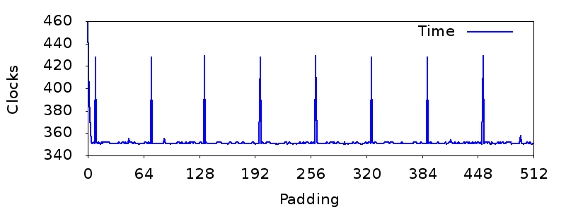

一次遇到有人问了这样一个问题：为什么下面代码运行结果显示IF判断比乘法运算慢？
#include <time.h>
#include <stdio.h>
#define LOOP_TIMES 1000000000
void mu_loop(void) {
clock_t start,end;
start=clock();
int a=7,b=13,c=23;
int duration,i,n=LOOP_TIMES;
for (i=0;i<n;i++) {c=a*b;}
end=clock();
duration=end-start;
printf( "mu_loop:%d\n", duration);
}
void if_loop(void){
clock_t start,end;
start=clock();
int duration,i,flag=0,n=LOOP_TIMES;
for (i=0;i<n;i++) {if(flag) {}}
end=clock();
duration=end-start;
printf( "if_loop:%d\n", duration);
}
main() { if_loop(); mu_loop(); }
/* Output:
if_loop:3219911
mu_loop:2776099 */
这不太符合常识，理论上乘法运算IMUL指令比IF判断CMP/TEST指令要慢才对。
因此围观群众都不大相信，纷纷在自己机器上将代码编译运行一遍，结果发现明明是乘法慢，遂质疑是不是提问者编译代码时的姿势不对，要么就是机器有问题。或有人认为这样的代码并不能准确测试出不同指令的速度，也有人认为可能是其使用的编译器作了Constant Folding优化，也有人认为是IF语句造成了CPU分支预测失败或Stall导致速度更慢，也有人认为是CPU将Independent IMUL指令高度并行化所以更快，众说纷纭。于是我也好奇测试了一下，在我的 Linux IA32 机器上使用 GCC -O0选项编译，结果真的是包含乘法运算的循环更快。更为诡异的是，如果我将源码中if_loop与mu_loop两个函数的先后顺序颠倒一下，运行结果又显示好像IF判断更快了。很神奇吧？这是为什么呢？其实前面都没猜中，至于真正的原因嘛，先不下结论，虽然至此已经能猜到个大概，可离确证还是有一段路要走的。
定位问题
循环的性能会受多方因素影响，直觉上可以断定，肯定是编译生成的循环指令有问题，但得先排除其它的可能。首先我们没有必要再去单独测试IMUL指令和CMP/TEST指令哪个更快，CPU厂商给的指令手册是最权威的解释，片面的实验反而会隐藏真相，原题给出的代码即是一例。其次需要排除编译器优化的影响，这很简单，直接gcc -O0 -S输出汇编代码就能看到真相。这里我只截取部分关键代码：
mu_loop:
# .......
movl $7, -20(%ebp) # a=7
movl $13, -24(%ebp) # b=13
movl $23, -28(%ebp) # c=23
movl $1000000000, -32(%ebp)
movl $0, -12(%ebp) # i=0
jmp .L2
.L3: # 这里是循环体，可以看到乘法并没被优化掉
movl -20(%ebp), %eax # a
imull -24(%ebp), %eax # a*b
movl %eax, -28(%ebp) # c=a*b
addl $1, -12(%ebp) # i++
.L2:
movl -12(%ebp), %eax
cmpl -32(%ebp), %eax
jl .L3 # Jump when i less than n
if_loop:
movl $0, -20(%ebp) # flag=0
movl $1000000000, -24(%ebp)
movl $0, -12(%ebp) # i=0
jmp .L5
.L6: # 这里是循环体，并没有IF判断相应的指令
addl $1, -12(%ebp) # i++
.L5:
movl -12(%ebp), %eax
cmpl -24(%ebp), %eax # compare i,n
jl .L6
好了，实打实的汇编，做乘法的imull指令就在循环体内，没有被Constant Folding优化掉，保证没有作弊。
并且我们还发现if_loop函数中的循环体是空的，GCC即使在关闭优化选项的情况下，仍然会移除 Body 为空的 IF 语句。于是前面几种猜测都可以排除：没有优化掉乘法运算，没有IF干扰分支预测，原本Intel手册中IMUL指令的 Latency 和 Throughput 就不及CMP/TEST指令，现在连IF判断也没有了，这下情况就变成了：包含乘法运算的循环竟然比空循环更快！？这就变得更不可思议了。如何让运行结果正常呢？回到汇编代码if_loop函数的.L6标签前面，即循环体指令前面，我在那个地方尝试性地添了4个nop指令，执行结果就又正常了，说明运行速度跟指令的地址有关——难道就是传说中的指令对齐？
指令对齐
为什么指令对齐会影响到程序性能？下面是《Optimizing Assembly》中的解释：
11.5 Alignment of code
Most microprocessors fetch code in aligned 16-byte or 32-byte blocks. If an important subroutine entry or jump label happens to be near the end of a 16-byte block then the microprocessor will only get a few useful bytes of code when fetching that block of code. It may have to fetch the next 16 bytes too before it can decode the first instructions after the label. This can be avoided by aligning important subroutine entries and loop entries by 16. Aligning by 8 will assure that at least 8 bytes of code can be loaded with the first instruction fetch, which may be sufficient if the instructions are small. We may align subroutine entries by the cache line size (typically 64 bytes) if the subroutine is part of a critical hot spot and the preceding code is unlikely to be executed in the same context.
按此说法，如果循环体指令没有按照 FetchBlockSize 对齐，那么就有可能循环体中的指令需要多次 Fetch 才能执行，循环次数过大就会看到性能差异。前面将两个函数在源码中颠倒次序、以及在循环体指令前添加几个空指令的尝试，凑巧使if_loop中的循环对齐了，所以运行结果又恢复正常。
汇编中有一个专门的东西用于实现指令对齐，
p2align（Pad to Align）：
.p2align abs-expr, abs-expr, abs-expr
- 第一个参数控制对齐边界（2^N，即让地址低N位为0），如《Intel® 64 and IA-32 Architectures Optimization Reference Manual》中建议「All branch targets should be 16-byte aligned.」 则可以写
.p2align 4。- 第二个可选参数为填充数据，默认是汇编器自己选择，在Code Section则用NOP填充，即等价于：
.p2align 4,0x90。- 第三个可选参数为最大填充字节，如
.p2align 4,,8表示当需要填充的数据大于8个字节时则干脆不要对齐算了。
有了这个命令，就不用自己试到底在循环前添加多少NOP才能对齐了，直接在代码里加上.p2align 4即可。添加上这段代码后看到执行结果又恢复正常，那么就可以基本确定是指令对齐的影响了。
重现问题
如果能够看到CPU执行未对齐指令时具体发生了什么，那就再好不过了。比如一开始我猜测会不会是未对齐的空循环执行时 L1 icache 上 Cache Miss 率更高，虽然理论上只有 Direct Mapped Cache 才会导致这样的结果，而现实中的 N-way Set-Associative Cache 只有 Jump 超过 ChunkSize 才会产生 Thrashing，不过通过Linux的perf工具测试一下就可以立刻推翻这种猜想了：
# 可以分别统计两个函数执行时icache miss的情况
# 需要你的CPU支持该统计功能
perf stat -e L1-icache-load-misses ./a.out
类似还有Branch Miss事件也可以统计。不过Code Fetch则没有办法直接拿到统计数据了。为了确认指令对齐会对性能造成影响，我们必须找到一个能有效重现问题的方法，否则连我自己都会怀疑是不是当时我的编译姿势不对。但是让指令对齐产生性能影响其实并不容易，因为指令不对齐的话，CPU大不了重新到 L1 icache 中再多读一段指令，而 L1 Cache的访问速度只有大约1到2个Clock Cycle，最多相当于执行一条IMUL指令。要构造出一个有效的实验，至少需要考虑以下几个因素：
- 循环体必须小于CPU的FetchBlockSize，大于的话对齐也就无济于事了。
- 循环体的指令消耗的时间必须足够小，否则每次多出的2个Clock在整体执行时间中所占比重太小，无法看出差异。所以这里仍然选择空循环。
- 小心CPU的黑魔法，测试结果不符合预期也有可能只是开机姿势不对 TOT。
接下来构造这样一个测试，在循环体前面不断添加NOP填充，然后运行程序，看看执行时间随着NOP填充增大呈怎样的变化。但预期测试结果是什么样子的呢？什么情况下NOP填充会影响程序性能？按照预期，当LoopStartAddress % FetchBlockSize < LoopBodySize时，即循环起始字节刚好落在AlignBoundary结尾时，循环体需要多次Fetch。所以程序执行时间会呈周期性，每隔 FetchBlockSize 的NOP填充，程序执行时间就会突然增大。在Linux上可以通过下面的命令获得FetchBlockSize：
cpuid -1|grep "byte prefetching"
下面是Ruby测试代码，分别生成从0到512字节填充的汇编代码，统计程序执行时间，最后交给GNU Plot绘制线图，X轴为NOP填充数量，Y轴为执行时长：
#!/usr/bin/env ruby
MAX_PAD = 2 ** 9
LOOP_COUNT= 2 ** 20
FETCH_BLOCK_SIZE=(`cpuid|grep "prefetching"`.match /(\d+)\s+byte/)[1].to_i
TMP_S='/tmp/align-test.s'
TMP_BIN='/tmp/align-test.bin'
def p2align(p)
padding= (['nop'] * p).join "\n"
code=<<ASM
.section .data
msg: .asciz "%d\\n"
.section .text
.global main
main:
call empty_loop
push %eax
push $msg
call printf
call exit
empty_loop:
jmp after_pad
#{padding}
after_pad:
call clock
pushl %eax
movl $#{LOOP_COUNT},%ecx
loop_start:
dec %ecx
dec %ecx
cmpl $0,%ecx
jge loop_start
call clock
popl %ecx
subl %ecx,%eax
ret
ASM
File.open TMP_S,'wb' do |f| f.write code end
`gcc #{TMP_S} -o #{TMP_BIN}`
i=1 # 要不要多执行几次取平均值呢？
clocks=0
i.times do
c=`#{TMP_BIN}`.to_i
clocks+=c
end
return clocks / i
end
DAT_FILE="align-perf-plot.dat"
dat=(0..MAX_PAD).map {|p| "#{p} #{p2align p}" }
File.open(DAT_FILE,"wb") {|f|f.write dat.join("\n")}
plot_cmd=<<CMD
set ylabel "Clocks"
set xlabel "Padding"
set xtics #{FETCH_BLOCK_SIZE}
set tics out
set xrange [0:#{MAX_PAD}]
set xtics nomirror
set ytics nomirror
set style data lines
set terminal png font "sans-serif,16" size #{[(MAX_PAD/FETCH_BLOCK_SIZE)*70,1080].max},300
set output "align-perf-plot.png"
plot "#{DAT_FILE}" title "Time" lw 2 lc rgb "blue"
CMD
IO.popen 'gnuplot','w' do |io| io.puts plot_cmd end
程序执行完后会生成一个align-perf-plot.png文件，下面是在我机器上运行得到的结果：

结果好像还挺理想的是不是？我将X轴步长设置成 FetchSize以便于看出执行时长的周期性，可以看到结果完全符合预期，每隔64字节的Padding，程序执行时间就会有个峰值。不过要是仔细看汇编代码你就会发现为什么循环体内有两条dec %ecx指令？为了避免其它不必要的影响，这个空循环中只使用寄存器，没有访问内存。但太简单也有它的坏处，如果你将程序改成只有一条dec %ecx指令，你可能会得到程序执行时间和指令对齐不呈相关性的结果。为什么会这样子呢？这个就是CPU的黑魔法吗？我只能猜测是受分支预测和Prefetch的影响，在Pipeline上执行cmpl $0,%ecx的同时，CPU可以预加载后面将要执行到的指令，也就是说这个时候CPU可能已经在并行加载下次循环的dec %ecx指令了，所以额外的Fetch时间会被并行执行抵消。为什么将这条指令重复一下就可以得到预期的结果？如果你只是添加上dec %eax是没用的，因为这条指令可以和前面的指令并行执行，多条指令同时依赖%ecx才能造成 Stall，使得循环体在Pipeline上变长，这样读取未对齐指令额外消耗的时间才能凸现——好像证明了一个猜想又带来了另一个新的猜想？总之我的编译姿势肯定是正确的，上面的程序能100%重现问题就是铁证。
最后结论
那又如何？指令对齐的性能影响是非常小的，而且为了对齐而添加的NOP指令也会造成浪费。
—— 但我现在知道可以用 GNU Plot 画图了啊。